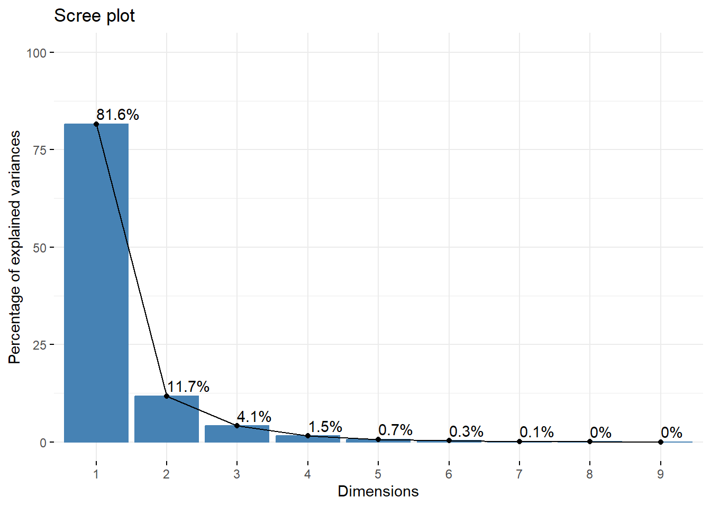
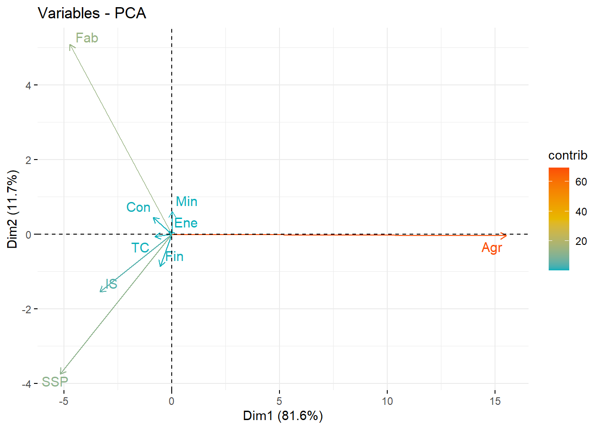
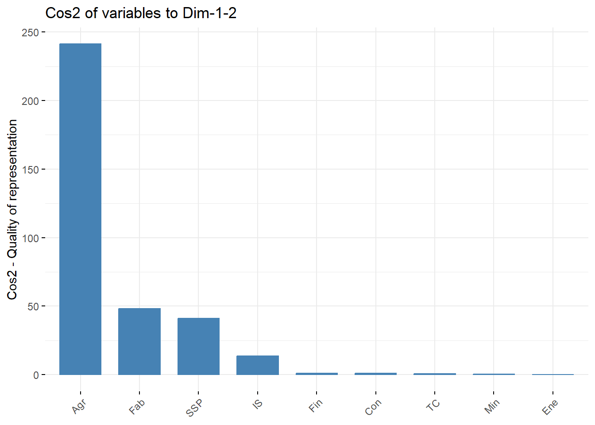
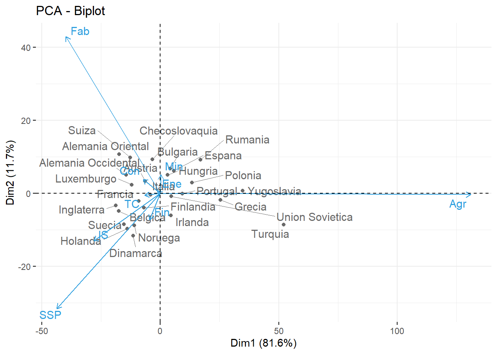
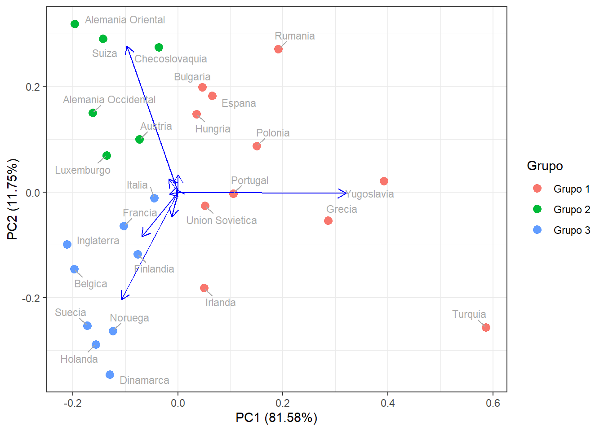

library(tidyverse)
library(ggplot2)
library(factoextra)
library(ggfortify)
library(ggrepel)Entrega4_AD_PCA
Considera los datos europa.dat que están disponibles en Aula Digital. Los datos corresponden a los porcentajes de población empleados en diferentes actividades económicas en Europa para el año 1979. Las variables consideradas son: Agricultura, Minas, Fábricas, Suministro Eléctrico, Construcción, Industrias de Servicio, Finanzas, Servicios Sociales y Personales y, Transporte y Comunicaciones. Utiliza el método de componentes principales para reducir el número de variables, y tratar de determinar grupos de países con comportamientos semejantes en la distribución de su fuerza de trabajo. En este caso, usa la matriz de covarianza para el cálculo de las componentes principales, ya que todos los datos están medidos en la misma escala (porcentaje de la población) y por las caractersticas de los datos, no parece una buena idea considerarlos todos de igual manera.
Datos
Empezamos cargando todas las librerías que utilizaremos.
Cargamos la tabla de datos y representemos un resumen de dicha tabla.
datos = read.table("europa.dat", header = TRUE)
glimpse(datos)Rows: 26
Columns: 9
$ Agr <dbl> 3.3, 9.2, 10.8, 6.7, 23.2, 15.9, 7.7, 6.3, 2.7, 12.7, 13.0, 41.4, …
$ Min <dbl> 0.9, 0.1, 0.8, 1.3, 1.0, 0.6, 3.1, 0.1, 1.4, 1.1, 0.4, 0.6, 0.5, 0…
$ Fab <dbl> 27.6, 21.8, 27.5, 35.8, 20.7, 27.6, 30.8, 22.5, 30.2, 30.2, 25.9, …
$ Ene <dbl> 0.9, 0.6, 0.9, 0.9, 1.3, 0.5, 0.8, 1.0, 1.4, 1.4, 1.3, 0.6, 0.8, 0…
$ Con <dbl> 8.2, 8.3, 8.9, 7.3, 7.5, 10.0, 9.2, 9.9, 6.9, 9.0, 7.4, 8.1, 8.6, …
$ IS <dbl> 19.1, 14.6, 16.8, 14.4, 16.8, 18.1, 18.5, 18.0, 16.9, 16.8, 14.7, …
$ Fin <dbl> 6.2, 6.5, 6.0, 5.0, 2.8, 1.6, 4.6, 6.8, 5.7, 4.9, 5.5, 2.4, 4.7, 2…
$ SSP <dbl> 26.6, 32.2, 22.6, 22.3, 20.8, 20.1, 19.2, 28.5, 28.3, 16.8, 24.3, …
$ TC <dbl> 7.2, 7.1, 5.7, 6.1, 6.1, 5.7, 6.2, 6.8, 6.4, 7.0, 7.6, 6.7, 9.4, 5…Análisis de Componentes Principales
Calculamos las componentes principales con el comando prcomp utilizando nuestro dataset, sin escalar los datos ya que están todos en la misma escala. Por último, los consideramos centrados en el 0.
datos.acp=prcomp(datos, scale = FALSE, center = TRUE)Los valores propios muestran el porcentaje de varianza explicada por cada componente principal.
eigenvalue variance.percent cumulative.variance.percent
Dim.1 303.45811 81.57836 81.57836
Dim.2 43.70166 11.74827 93.32663
Dim.3 15.20735 4.08818 97.41481
Dim.4 5.63936 1.51602 98.93084
Dim.5 2.44340 0.65686 99.58769
Dim.6 1.04603 0.28120 99.86890
Dim.7 0.42085 0.11314 99.98203
Dim.8 0.06493 0.01745 99.99949
Dim.9 0.00191 0.00051 100.00000Notemos que usando las 2 primeras componentes principales explican aproximadamente el 93.3% de los datos. Veamos el gráfico del codo:

Efectivamente, viendo el gráfico y utilizando el criterio del codo, nos quedaremos con las dos primeras componentes principales.
Realicemos un gráfico de círculo de correlación variable para ver como se agrupan las variables y la calidad de representación que tienen.

Observemos que la variable Agricultura queda muy bien representada por la primera componente principal. De la misma manera, observamos que las variables Fábricas y Servicios Sociales y Personales también estan bastante representadas. El resto de variables están poco representadas, como se puede ver en la poca longitud de las flechas.
Para corroborar numéricamente la calidad de representación, realizaremos un gráfico de cos2.

Efectivamente, las tres primeras variables tienen un cos2 alto, por tanto estas bien representadas. En cambio, las otras variables tienen un valor de cos2 prácticamente nulo, indica que estas variables no estan bien representadas por las componentes principales.
Para ver como se relacionan las componentes principales con los datos originales, veamos los autovectores.
PC1 PC2 PC3 PC4 PC5 PC6 PC7 PC8 PC9
Agr 0.8918 -0.0068 0.1185 0.0968 0.1800 -0.1526 -0.0916 0.0687 -0.3354
Min 0.0019 0.0923 0.0794 0.0102 -0.0011 0.4564 0.7665 0.2905 -0.3240
Fab -0.2713 0.7703 0.1847 0.0104 0.3360 -0.2009 -0.1620 0.0741 -0.3375
Ene -0.0084 0.0120 -0.0068 -0.0181 -0.0025 0.2309 0.0629 -0.9092 -0.3399
Con -0.0496 0.0690 -0.0773 0.0829 -0.7243 -0.5584 0.1943 -0.0045 -0.3253
IS -0.1918 -0.2344 -0.5796 0.6076 0.2659 -0.0216 -0.0879 0.1044 -0.3367
Fin -0.0311 -0.1301 -0.4700 -0.7812 0.1211 -0.0553 -0.0800 0.1228 -0.3344
SSP -0.2980 -0.5668 0.5977 -0.0483 0.2359 -0.2479 -0.0045 0.0521 -0.3324
TC -0.0454 -0.0099 0.1594 0.0378 -0.4349 0.5459 -0.5675 0.2238 -0.3342Observemos que la primera componente principal da un peso muy elevado y positivo a la variable Agrucultura, y de signo contrario a las demás (excepto Mineria con un peso muy bajo).
Respecto a la segunda componente principal, representa sobretodo a Fábrica y a Servicios Sociales y Personales (con signos opuestos pero un peso elevado).
Ahora, vamos a realizar un biplot, que nos permitirá visualizar las variables originales y las observaciones transformadas en los ejes de componentes principales.

De nuevo, se aprecia como la variable Agricultura es la mejor representada debido a la longitud de la flecha. Le siguen las variables de Fábricas y Servicios Sociales y Personales, mejor representadas por la segunda componente.
Resultados del Análisis
Llegado a este punto, vamos a comprobar numéricamente todas las conclusiones que hemos sacado anteriormente. Realmente basta restringirnos a las dos primeras componentes principales ya que en el estudio hemos decidido utilizar solamente estas dos.
Resultados por Variables
Empezamos por las contribuciones de las variables a las componentes principales.
Dim.1 Dim.2 Dim.3 Dim.4 Dim.5 Dim.6 Dim.7 Dim.8 Dim.9
Agr 79.5233 0.0047 1.4034 0.9364 3.2416 2.3295 0.8394 0.4717 11.2501
Min 0.0004 0.8528 0.6301 0.0103 0.0001 20.8266 58.7477 8.4369 10.4951
Fab 7.3588 59.3315 3.4106 0.0108 11.2896 4.0373 2.6239 0.5493 11.3881
Ene 0.0070 0.0144 0.0046 0.0329 0.0006 5.3298 0.3961 82.6614 11.5531
Con 0.2460 0.4759 0.5977 0.6877 52.4556 31.1763 3.7750 0.0020 10.5838
IS 3.6787 5.4951 33.5951 36.9188 7.0683 0.0465 0.7733 1.0907 11.3335
Fin 0.0969 1.6921 22.0872 61.0263 1.4656 0.3056 0.6396 1.5069 11.1798
SSP 8.8832 32.1237 35.7299 0.2336 5.5656 6.1435 0.0021 0.2718 11.0466
TC 0.2058 0.0098 2.5413 0.1432 18.9130 29.8049 32.2029 5.0093 11.1699 Agr Min Fab Ene Con IS Fin SSP TC
Dim.1 79.5233 0.0004 7.3588 0.0070 0.2460 3.6787 0.0969 8.8832 0.2058
Dim.2 0.0047 0.8528 59.3315 0.0144 0.4759 5.4951 1.6921 32.1237 0.0098Tambien apreciamos la calidad de representación de las variables a las componentes principales.
Dim.1 Dim.2 Dim.3 Dim.4 Dim.5 Dim.6 Dim.7 Dim.8 Dim.9
Agr 241.31992 0.00204 0.21343 0.05281 0.07920 0.02437 0.00353 0.00031 0.00022
Min 0.00112 0.37269 0.09582 0.00058 0.00000 0.21785 0.24724 0.00548 0.00020
Fab 22.33093 25.92883 0.51867 0.00061 0.27585 0.04223 0.01104 0.00036 0.00022
Ene 0.02135 0.00631 0.00070 0.00186 0.00001 0.05575 0.00167 0.05367 0.00022
Con 0.74638 0.20799 0.09090 0.03878 1.28170 0.32611 0.01589 0.00000 0.00020
IS 11.16320 2.40145 5.10893 2.08199 0.17271 0.00049 0.00325 0.00071 0.00022
Fin 0.29405 0.73949 3.35887 3.44149 0.03581 0.00320 0.00269 0.00098 0.00021
SSP 26.95667 14.03857 5.43358 0.01318 0.13599 0.06426 0.00001 0.00018 0.00021
TC 0.62449 0.00427 0.38647 0.00807 0.46212 0.31177 0.13553 0.00325 0.00021Respecto a las variables, hemos podido comprobar lo expuesto anteriormente, se aprecia una fuerte contribución de la variable Agricultura a la primera componente principal, además de una muy buena representación (un valor de cos2 muy elevado).
Seguidamente, la variable Fábricas tiene gran contribución a la segunda componente principal, con menor representación debido al valor de cos2 y que también contribuye a la primera componente principal, pero muy poco. En cambio, la variable Servicios sociales y Personales tiene más poca contribución a la segunda componente, pero está algo mejor representada por la primera que la variable anterior; de todos modos, la calidad de representación es más baja que las anteriores.
No podemos destacar más variables ya que, como vimos en los gráficos, no habia prácticamente representación por parte de las componentes principales.
Resultados por Observaciones
Ahora, respecto a las observaciones, empezamos por las coordenadas.
Dim.1 Dim.2 Dim.3 Dim.4 Dim.5 Dim.6 Dim.7 Dim.8 Dim.9
Belgica -17.52 -4.93 -2.36 0.19 0.49 0.59 -0.03 0.26 0.01
Dinamarca -11.50 -11.66 3.00 -2.53 -0.26 -1.00 0.16 0.11 -0.10
Francia -9.13 -2.17 -2.75 -0.13 0.37 -0.74 0.45 -0.07 0.00
Alemania Occidental -14.39 5.05 0.21 -1.21 2.58 -0.26 -0.38 0.11 0.04
Irlanda 4.46 -6.13 -1.92 3.48 0.35 0.54 0.36 -0.42 -0.07
Italia -4.03 -0.39 -2.41 4.81 -0.25 -1.50 0.25 0.05 -0.03
Luxemburgo -12.09 2.33 -4.63 1.97 -0.03 1.08 1.71 0.66 -0.02
Holanda -13.90 -9.72 -1.71 -0.68 -1.51 -0.84 0.51 -0.27 0.07
Inglaterra -18.73 -3.33 0.59 -1.01 2.30 0.44 0.45 -0.27 0.03
Austria -6.47 3.36 -4.76 1.27 -0.52 0.83 -0.51 -0.26 0.02
Finlandia -6.84 -3.98 0.07 -0.96 0.27 0.68 -0.93 -0.28 -0.04
Grecia 25.43 -1.80 -2.92 2.86 -1.88 0.60 -0.84 0.14 0.02
Noruega -10.97 -8.86 0.23 0.59 -2.01 1.42 -0.88 0.37 0.06
Portugal 9.40 -0.09 -1.24 2.18 0.07 -1.03 -0.52 -0.08 -0.02
Espana 5.77 6.16 -4.88 -4.48 -3.04 -1.70 0.26 -0.04 0.04
Suecia -15.31 -8.53 3.92 -2.63 1.42 -0.73 0.04 -0.02 0.02
Suiza -12.68 9.78 -5.69 1.04 1.25 -1.16 -1.26 0.00 -0.01
Turquia 52.12 -8.64 2.97 1.80 3.18 -0.37 0.06 0.12 0.06
Bulgaria 4.16 6.71 4.94 0.14 0.56 -0.55 -0.22 0.18 0.02
Checoslovaquia -3.25 9.23 3.78 0.15 -0.08 0.24 0.58 -0.12 0.07
Alemania Oriental -17.42 10.73 4.90 -0.25 1.36 1.27 -0.44 0.15 -0.05
Hungria 3.14 4.99 2.98 0.73 -1.32 1.88 0.58 -0.57 0.00
Polonia 13.32 2.94 3.59 0.49 -1.36 0.33 0.66 0.02 0.01
Rumania 17.01 9.13 2.58 -0.24 -0.04 -1.46 0.56 -0.03 -0.05
Union Sovietica 4.59 -0.87 8.45 -0.98 -2.93 -0.08 -0.63 0.20 -0.03
Yugoslavia 34.83 0.69 -6.95 -6.59 1.03 1.52 0.02 0.06 -0.04También las contribuciones de cada observación a las componentes principales.
Dim.1 Dim.2 Dim.3 Dim.4 Dim.5 Dim.6 Dim.7 Dim.8 Dim.9
Belgica 3.89 2.14 1.40 0.03 0.38 1.27 0.01 4.05 0.13
Dinamarca 1.68 11.97 2.28 4.38 0.11 3.68 0.24 0.76 19.39
Francia 1.06 0.41 1.91 0.01 0.22 2.02 1.84 0.31 0.02
Alemania Occidental 2.63 2.24 0.01 1.01 10.47 0.25 1.34 0.78 3.89
Irlanda 0.25 3.31 0.94 8.26 0.19 1.07 1.17 10.49 10.51
Italia 0.21 0.01 1.46 15.78 0.10 8.30 0.57 0.16 2.35
Luxemburgo 1.85 0.48 5.42 2.63 0.00 4.33 26.63 25.62 0.89
Holanda 2.45 8.32 0.74 0.32 3.59 2.57 2.42 4.42 9.00
Inglaterra 4.45 0.98 0.09 0.69 8.32 0.72 1.84 4.39 2.20
Austria 0.53 0.99 5.72 1.11 0.42 2.54 2.33 3.88 0.50
Finlandia 0.59 1.39 0.00 0.63 0.12 1.71 7.87 4.63 3.12
Grecia 8.19 0.29 2.15 5.57 5.56 1.32 6.45 1.12 0.54
Noruega 1.53 6.91 0.01 0.24 6.34 7.38 7.11 8.16 7.00
Portugal 1.12 0.00 0.39 3.24 0.01 3.90 2.51 0.34 0.62
Espana 0.42 3.34 6.02 13.69 14.55 10.67 0.61 0.09 3.17
Suecia 2.97 6.40 3.89 4.73 3.16 1.99 0.01 0.04 0.73
Suiza 2.04 8.42 8.19 0.74 2.44 4.95 14.47 0.00 0.15
Turquia 34.42 6.57 2.22 2.20 15.88 0.49 0.03 0.80 6.83
Bulgaria 0.22 3.96 6.17 0.01 0.49 1.11 0.45 2.01 1.11
Checoslovaquia 0.13 7.51 3.62 0.01 0.01 0.21 3.07 0.90 8.63
Alemania Oriental 3.84 10.14 6.06 0.04 2.93 5.97 1.75 1.27 4.27
Hungria 0.12 2.19 2.25 0.36 2.72 13.01 3.05 19.34 0.02
Polonia 2.25 0.76 3.26 0.16 2.92 0.39 3.98 0.02 0.15
Rumania 3.67 7.33 1.69 0.04 0.00 7.84 2.84 0.04 4.50
Union Sovietica 0.27 0.07 18.05 0.65 13.54 0.02 3.57 2.34 2.42
Yugoslavia 15.38 0.04 12.21 29.61 1.68 8.44 0.00 0.21 4.02Por último, la calidad de representación, es decir, el valor de cos2.
Dim.1 Dim.2 Dim.3 Dim.4 Dim.5 Dim.6 Dim.7 Dim.8 Dim.9
Belgica 0.910 0.072 0.016 0.000 0.001 0.001 0.000 0.000 0
Dinamarca 0.464 0.478 0.032 0.023 0.000 0.004 0.000 0.000 0
Francia 0.863 0.049 0.078 0.000 0.001 0.006 0.002 0.000 0
Alemania Occidental 0.859 0.106 0.000 0.006 0.028 0.000 0.001 0.000 0
Irlanda 0.269 0.508 0.050 0.164 0.002 0.004 0.002 0.002 0
Italia 0.340 0.003 0.121 0.485 0.001 0.047 0.001 0.000 0
Luxemburgo 0.806 0.030 0.118 0.021 0.000 0.006 0.016 0.002 0
Holanda 0.656 0.321 0.010 0.002 0.008 0.002 0.001 0.000 0
Inglaterra 0.951 0.030 0.001 0.003 0.014 0.001 0.001 0.000 0
Austria 0.532 0.143 0.288 0.021 0.003 0.009 0.003 0.001 0
Finlandia 0.719 0.243 0.000 0.014 0.001 0.007 0.013 0.001 0
Grecia 0.963 0.005 0.013 0.012 0.005 0.001 0.001 0.000 0
Noruega 0.584 0.381 0.000 0.002 0.020 0.010 0.004 0.001 0
Portugal 0.921 0.000 0.016 0.049 0.000 0.011 0.003 0.000 0
Espana 0.262 0.298 0.187 0.158 0.073 0.023 0.001 0.000 0
Suecia 0.706 0.219 0.046 0.021 0.006 0.002 0.000 0.000 0
Suiza 0.546 0.325 0.110 0.004 0.005 0.005 0.005 0.000 0
Turquia 0.966 0.027 0.003 0.001 0.004 0.000 0.000 0.000 0
Bulgaria 0.198 0.515 0.279 0.000 0.004 0.003 0.001 0.000 0
Checoslovaquia 0.095 0.771 0.129 0.000 0.000 0.001 0.003 0.000 0
Alemania Oriental 0.680 0.258 0.054 0.000 0.004 0.004 0.000 0.000 0
Hungria 0.196 0.497 0.178 0.011 0.035 0.071 0.007 0.007 0
Polonia 0.880 0.043 0.064 0.001 0.009 0.001 0.002 0.000 0
Rumania 0.758 0.218 0.017 0.000 0.000 0.006 0.001 0.000 0
Union Sovietica 0.204 0.007 0.692 0.009 0.083 0.000 0.004 0.000 0
Yugoslavia 0.927 0.000 0.037 0.033 0.001 0.002 0.000 0.000 0Grupos
Vamos a tratar de determinar grupos de países con comportamientos semejantes en la distribución de su fuerza de trabajo.
El criterio que seguiremos es separar las observaciones dependiendo de su contribucón a las componentes principales. Como la variable Agricultura es la que tiene una mayor representación, uno de los grupos estará formado por los paises cuya mayor fuerza de trabajo se basa en la agricultura. Para determinar este grupo, consideraremos los paises que tienen coordenada positiva en el eje de la primera componente principal.
Las otras dos variables mejor representadas son Fábricas y Servicios Sociales y Personales. La relación de estas variables con la primera componente principal es negativa, así que consideramos el resto de paises para clasificar en estos dos grupos. Esta clasificación se va a determinar mediante la segunda componente principal: la relación de Fábricas con la componente principal es positiva, mientras que con la otra variable es negativa. Por tanto, utilizaremos estas condiciones para dividir los paises.
Dim.1 Dim.2 Grupos
Belgica -17.516687 -4.92622849 Grupo 3
Dinamarca -11.496688 -11.66176637 Grupo 3
Francia -9.128686 -2.16828207 Grupo 3
Alemania Occidental -14.393424 5.04749385 Grupo 2
Irlanda 4.458174 -6.13156498 Grupo 1
Italia -4.026684 -0.38889529 Grupo 3
Luxemburgo -12.089752 2.33236877 Grupo 2
Holanda -13.900455 -9.72359023 Grupo 3
Inglaterra -18.728675 -3.33178946 Grupo 3
Austria -6.471418 3.35662962 Grupo 2
Finlandia -6.837047 -3.97634061 Grupo 3
Grecia 25.427083 -1.80467718 Grupo 1
Noruega -10.972019 -8.85877780 Grupo 3
Portugal 9.403865 -0.08570061 Grupo 1
Espana 5.774973 6.15867547 Grupo 1
Suecia -15.311975 -8.52674423 Grupo 3
Suiza -12.683839 9.77920054 Grupo 2
Turquia 52.115644 -8.64165980 Grupo 1
Bulgaria 4.156791 6.70685051 Grupo 1
Checoslovaquia -3.246127 9.23467980 Grupo 2
Alemania Oriental -17.415527 10.73233092 Grupo 2
Hungria 3.135737 4.98695108 Grupo 1
Polonia 13.315709 2.94482700 Grupo 1
Rumania 17.011336 9.12523022 Grupo 1
Union Sovietica 4.587043 -0.87197041 Grupo 1
Yugoslavia 34.832648 0.69274975 Grupo 1Añadimos este factor a nuestra tabla de datos original y realizamos un gráfico para visualizar la división de los grupos.
Rows: 26
Columns: 10
$ Agr <dbl> 3.3, 9.2, 10.8, 6.7, 23.2, 15.9, 7.7, 6.3, 2.7, 12.7, 13.0, 41.4…
$ Min <dbl> 0.9, 0.1, 0.8, 1.3, 1.0, 0.6, 3.1, 0.1, 1.4, 1.1, 0.4, 0.6, 0.5,…
$ Fab <dbl> 27.6, 21.8, 27.5, 35.8, 20.7, 27.6, 30.8, 22.5, 30.2, 30.2, 25.9…
$ Ene <dbl> 0.9, 0.6, 0.9, 0.9, 1.3, 0.5, 0.8, 1.0, 1.4, 1.4, 1.3, 0.6, 0.8,…
$ Con <dbl> 8.2, 8.3, 8.9, 7.3, 7.5, 10.0, 9.2, 9.9, 6.9, 9.0, 7.4, 8.1, 8.6…
$ IS <dbl> 19.1, 14.6, 16.8, 14.4, 16.8, 18.1, 18.5, 18.0, 16.9, 16.8, 14.7…
$ Fin <dbl> 6.2, 6.5, 6.0, 5.0, 2.8, 1.6, 4.6, 6.8, 5.7, 4.9, 5.5, 2.4, 4.7,…
$ SSP <dbl> 26.6, 32.2, 22.6, 22.3, 20.8, 20.1, 19.2, 28.5, 28.3, 16.8, 24.3…
$ TC <dbl> 7.2, 7.1, 5.7, 6.1, 6.1, 5.7, 6.2, 6.8, 6.4, 7.0, 7.6, 6.7, 9.4,…
$ Grupo <fct> Grupo 3, Grupo 3, Grupo 3, Grupo 2, Grupo 1, Grupo 3, Grupo 2, G…
Veamos en un mapa de Europa con los paises pintados en función del grupo al cual le hemos asignado:

Nota: Como los datos se tomaron en 1979, el mapa de Europa ha cambiado respecto al actual. Algunos paises se han fragmentado y otros se han unido. En concreto:
Debido a la separación de Alemania por muro de Berlín después de la Seguna Guerra Mundial se diferenció entre Alemania Oriental y Alemania Occidental (hasta 1989, que se volvió a unir en un solo estado). Por tanto, en el mapa solo hemos considerado Alemania.
Hay una muestra llamada “Checoslovaquia”, que actualmente este estado esta separado en Republica Checa y Eslovaquia (separación en 1992).
Del mismo modo aparece la Unión Sovietica, cuyos paises que la conformaban son: Rusia, Transcaucásicas (Armenia, Azerbayán y Georgia), Ucrania y Bielorrusia (disolución en 1991).
Por último tenemos Yugoslavia: Bosnia y Herzegovina, Croacia, Eslovenia, Macedonia, Montenegro y Serbia (disolución en 1992).
A la hora de pintar el mapa, todos los paises actuales que formaban parte de algun estado mencionado anteriormente se han coloreado del mismo color que el estado al que pertenecían. Por tanto, las conclusiones que se extraen no son actuales ya que cada país ahora es independiente.
Conclusión
Usando el método de componentes principales hemos podido reducir el número de variables a 2, ya que explican aproximadamente el 93.3% de los datos.
Las variables iniciales que mejor se han podido describir con las dos componentes principales han sido
Agricultura,FábricayServicios Sociales y Personales.Hemos podido establecer 3 grupos de paises con comportamientos semejantes en función de si su fuerza de trabajo se distribuía más en
Agricultura(Grupo 1),Fábrica(Grupo 2) yServicios Sociales y Personales(Grupo 3).